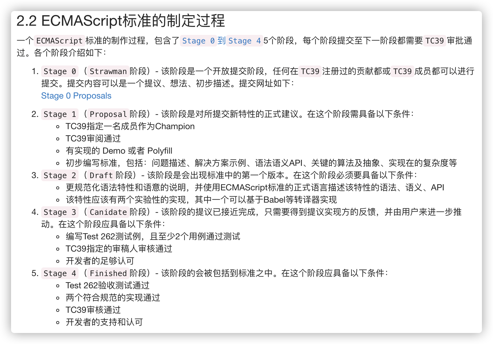

本文主要以 babel 7.x 及以上
参考
https://babeljs.io/docs/en/babel-preset-env#usebuiltins
# @babel/preset-env
根据 target environment 转化语法和作为可选项引入相应的 polyfills
注意：@babel/preset-env 不会包含低于 Stage 3 的 JavaScript语法建议，因为在 TC39 流程的那个阶段，任何浏览器都还不会去实现它。
# Target
该参数决定了我们项目需要适配到的环境，默认情况下，除非设置了 target 或 ignoreBrowserslistConfig 选项，否则 @ babel/preset-env 将使用browserslist配置源。

如果未设置 target environment，将 transform all ES2015-ES2020 code to be ES5 compatible， babel 7 并不会设置 target 为 default 选项（babel 8 可能会改变）。
{
"presets": [["@babel/preset-env", { "targets": "defaults" }]]
}
target environment 查询语法参考 https://github.com/browserslist/browserslist#queries
# useBuiltIns
"usage" | "entry" | false, defaults to false
// useBuiltIns: false
// 在入口中引入，会把所有的 polyfills 全部打入，造成包体积庞大
import'core-js/stable';
import'regenerator-runtime/runtime';
// useBuiltIns: usage
// 在项目的入口文件处不需要 import 对应的 polyfills 相关库。babel 会根据用户代码的使用情况，并根据 targets 自行注入相关 polyfills。
// useBuiltIns: entry
// 在项目的入口文件处 import 对应的 polyfills 相关库
// 此时 babel 会根据当前 targets 描述，把需要的所有的 polyfills 全部引入到你的入口文件
# corejs
简单讲 corejs-2 不会维护了，所有浏览器新 feature 的 polyfill 都会维护在 corejs-3 上。
By default, only polyfills for stable ECMAScript features are injected
useBuiltIns
- entry：直接 import 对应的 proposal polyfill (opens new window)
- usage：
corejs: { version: "3.8", proposals: true }
# 总结
{
"presets": [
[
"@babel/preset-env",
{
"targets":
{
"chrome": "58"
// 按自己需要填写
},
"useBuiltIns": "entry",
"corejs":
{
"version": 3, "proposals": true
}
}
]
],
"plugins": []
}
import 'core-js/stable';
import 'regenerator-runtime/runtime';
// 入口文件代码
这样配置的原因是：targets 下设置我们业务项目所需要支持的最低环境配置，useBuiltIns 设置为 entry 为，将最低环境不支持的所有 polyfill 都引入到入口文件（即使你在你的业务代码中并未使用）。这是一种兼顾最终打包体积和稳妥的方式，为什么说稳妥呢，因为我们很难保证引用的三方包有处理好 polyfill 这些问题。当然如果你能充分保证你的三方依赖 polyfill 处理得当，那么也可以把 useBuiltIns 设置为 usage。
# @babel/plugin-transform-runtime
问题一：还是会有一定程度的代码重复
问题二：针对项目，polyfill 会污染全局可以接受，但是作为 Library 我更希望它不会污染全局环境
需要注意的是，一旦采用 @babel/plugin-transform-runtime, @babel/preset-env 中的 targets 将会失效